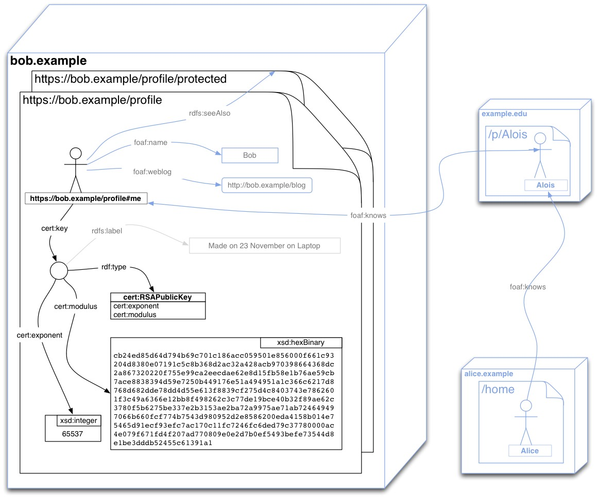
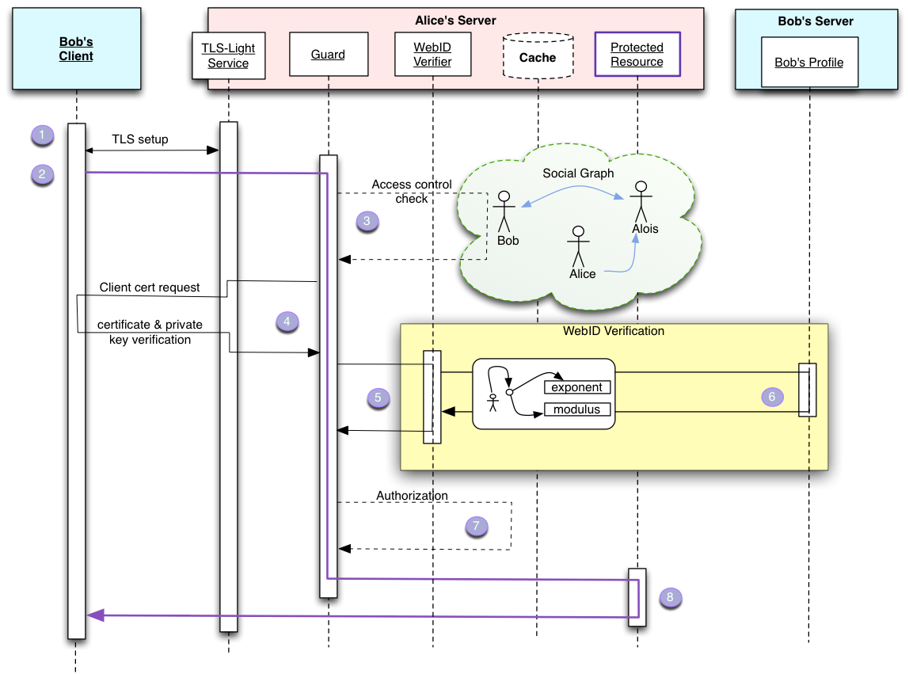

Abstract
A global distributed Social Web requires that each person be able to control their identity, that this identity be linkable across sites - placing each person in a Web of relationships - and that it be possible to authenticate globally with such identities. By making distributed authentication easy one can allow everybody to protect their resources and enable their preferred privacy settings.
This specification outlines a simple universal identification mechanism that is distributed, openly extensible, improves privacy, security and control over how each person can identify themselves in order to allow fine grained access control to their information on the Web.
It does this by applying the best practices of Web Architecture whilst building on well established widely deployed protocols and standards including HTML, URIs, HTTP, TLS, X.509 Certificates, and RDF Semantics.
How to Read this Document
There are a number of concepts that are covered in this document that the
reader may want to be aware of before continuing. General knowledge of
public key cryptography
and RDF [RDF-PRIMER] is necessary to understand how
to implement this specification. WebID uses a number of specific technologies
like HTTP over TLS [HTTP-TLS], X.509 certificates [X509V3],
Turtle [turtle] and RDFa [RDFA-CORE].
A general Introduction is provided for all that
would like to understand why this specification is necessary to simplify usage
of the Web.
The terms used throughout this specification are listed in the section
titled Terminology.
Developers that are interested in implementing this specification will be
most interested in the sections titled
Authentication Sequence and
Authentication Sequence Details.
Status of This Document
This section describes the status of this document at the time of its publication.
Other documents may supersede this document. A list of current W3C publications and the
latest revision of this technical report can be found in the W3C technical reports index at
http://www.w3.org/TR/.
This document is produced from work by the
W3C WebID Community Group.
This is an internal draft document and may not even end up being officially
published. It may also be updated, replaced or obsoleted by other documents
at any time. It is inappropriate to cite this document as other than
work in progress.
The source code for this document is available at the following
URI:
https://dvcs.w3.org/hg/WebID
This document was published by the WebID CG as an Editor's Draft.
If you wish to make comments regarding this document, please send them to
public-webid@w3.org
(subscribe,
archives).
All comments are welcome.
Publication as an Editor's Draft does not imply endorsement by the W3C
Membership. This is a draft document and may be updated, replaced or obsoleted by other
documents at any time. It is inappropriate to cite this document as other than work in
progress.
This document was produced by a group operating under the
5 February 2004 W3C Patent
Policy.
W3C maintains a public list of any patent
disclosures
made in connection with the deliverables of the group; that page also includes
instructions for disclosing a patent. An individual who has actual knowledge of a patent
which the individual believes contains
Essential
Claim(s) must disclose the information in accordance with
section
6 of the W3C Patent Policy.
2. Preconditions
2.1 The certificate
The Key Store must have a Certificate with a Subject Alternative Name URI entry.
This URI must be one that dereferences to a WebID Profile whose graph contains a cert:key relation from the WebID to the public key published in the Certificate . (see below The WebID Profile Document)
2.2 The WebID Profile Document
The WebID Profile document MUST be a [WEBID] document. It MUST also expose the relation between the WebID URI and the Subject's public keys using the cert ontology as well as the standard xsd datatypes.
Note
The cert ontology will be extended to cover DSA, Eliptic Curve Cryptography, and other cryptographic alogrithms as requests for them are made, proposals accepted, and when enough working and compatible implementations can be shown to work. Please contact the WebID Comunity Group with requests and proposals.
The set of relations to be published at the
WebID Profile document can be presented in a graphical notation as follows.

The document can publish many more relations that are of interest to the WebID-TLS protocol, as shown in the above graph by the grayed out relations.
For example Bob can publish a depiction or logo, so that sites he authenticates to can personalize the user experience. He can post links to people he knows, where those have WebIDs published on other sites, in order to create a distributed Social Web.
He can also publish relations to protected documents, where he keeps more information for people who authenticate, such as his friend Alois or his friends friends who may not yet know him personally, such as Alice.
The protocol does not depend on any particular serialization of the graph, provided that agents are able to parse that serialization and obtain the graph automatically, see examples in the [WEBID] specification.
2.2.1 Vocabulary
RDF graphs are built using vocabularies defined by URIs, that can be placed in subject, predicate or object position.
The definition of each URI should be found at the namespace of the URI.
Here we detail the core cryptographic terms needed. The optional foaf vocabulary used to describe
agents can be found at the the foaf namespace vocabulary document.
Below is a short summary of the vocabulary elements to be used when conveying the relation between the
Subject and his or her key, within a WebID Profile document.
For more details please consult the cert ontology document.
- cert:key
- Used to associate a WebID URI with any PublicKey. A WebID Profile
MUST contain at least one PublicKey that is associated with the
corresponding WebID URI.
- cert:RSAPublicKey
- Refers to the class of RSA Public Keys. A RSAPublicKey MUST specify both a
cert:modulus and a cert:exponent property. As the cert:modulus and cert:exponent relations both
have as domain a cert:RSAPublicKey, the type of the key can be inferred by the use of those relations
and need not be written out explicitly.
- cert:modulus
- Used to relate an RSAPublic key to its modulus expressed as a hexBinary.
An RSA key MUST have one and only one modulus. The datatype of a modulus is xsd:hexBinary. The string representation of the hex:Binary MUST not contain any whitespaces in between the hex numbers.
- cert:exponent
- Used to relate an RSAPublic key to its exponent expressed as a decimal integer.
An RSA key MUST have one and only one exponent. The datatype of a modulus is xsd:integer.
3. Disabling a WebID Certificate
A WebID Certificate identifies the Subject alone and no one else, if and only if that Subject is the only one to control the corresponding private key.
It is very important therefore that the Subject take care of keeping the private key secure.
This can be done by keeping it in the Key Store of a personal machine in an account that is password protected and free of viruses, or best of all on some physical device where the private key is inaccessible to be read by any software.
In the second case, having the device implies that the private key has not been lost or copied.
In the first case the user has to be more careful for signals of misuse.
In either situation if the Subject is suspicious that his private key has been taken, future authentications for that certificate can be disabled by removing the corresponding public key from the WebID Profile.
If the profile contains more than one public key for the Subject then it is suggested that each public key contain a label to help the user locate the key. In the examples above an rdfs:label with a creation date was used for this purpose.
4. The WebID Authentication Protocol
4.1 Authentication Sequence
In order to give the full context of a Client interaction with a Server we will illustrate the protocol with the following sequence diagram.
Bob initiates a connection to Alice's server via a TLS enabled protocol such as HTTPS in order to access a Protected Resource or a Protected Service.
The Protected Resource MUST be served over a TLS-Light Service, that will not do full CA authentication of Client Certificates it receives.
The Protected Resource may be a document served over HTTPS, but it could also be a SOAP service, or some other resource.
This resource is protected by a Guard, which uses a WebID Verifier to verify the non Certified WebIDs found in the certificate.
Once the verification succeeds the Guard checks to see if the Agent identified by the WebID is allowed access to the resource, by using trusted information from the Web and access control rules.

The steps in detail are as follows:
- Bob's Client MUST open a TLS [TLS] connection with the server which authenticates itself using the standard TLS protocol.
- Once the Transport Layer Security [TLS] has been set up, the application protocol exchange can start.
If the protocol is HTTP then the client can request an HTTP GET, PUT, POST, DELETE, ... action on a resource as detailed by [HTTP11].
-
The Guard can then intercept that request and by checking access control rules associated with that resource, determine if the client needs authorization and hence authentication for that type of request.
If the request has no access restrictions the request can be passed straight on to the resource.
If the request does have access restrictions then the Guard can proceed to the next step.
- If the resource requires WebID authentication, the Guard MAY request the client to authenticate itself using public key cryptography by signing a token with its private key and have the Client send its Certificate. This has been carefully defined in the TLS protocol and can be summarized by the following steps:
- The Guard requests the TLS agent to make a Certificate Request to the client. The TLS layer does this. Because the WebID-TLS protocol does not rely on Certificate Authorities to verify the contents of the Certificate, the TLS Agent can ask for any Certificate from the Client. More details in Requesting the Client Certificate
- The Client asks Bob to choose a certificate if the choice has not been automated.
We will assume that Bob does choose a WebID Certificate and sends it to the client.
- The TLS Agent MUST verify that the client is indeed in possession of the private key.
What is important here is that the TLS Agent need not know the Issuer of the Certificate, or need not have any trust relation with the Issuer.
Indeed if the TLS Layer could verify the signature of the Issuer and trusted the statements it signed, then step 5 and 6 would not be needed - other than perhaps as a way to verify that the key was still valid.
- The WebID Certificate is then passed on to the Guard with the provision that the WebID still needs to be verified.
- The Guard then MUST ask the Verification Agent to verify that the WebIDs in the WebID Certificate do identify the agent who knows the given Public Key.
- The Verification Agent MUST extract the Public Key and all the URI entries contained in the
Subject Alternative Name extension of the WebID Certificate.
A WebID Certificate MAY contain multiple URI entries which are considered Claimed WebIDs at this point, since they have not been verified.
The Verification Agent may verify as many or as few WebIDs it has time for.
It may do it in parallel and asynchronously.
However that is done, a Claimed WebID can only be considered verified if the following steps have been accomplished successfully:
- The WebID Verifier must get access to an up to date version of the WebID Profile Graph.
- If the WebID Verifier has an up to date version of the graph in its graph cache then it can return it.
- Otherwise the WebID verifier MUST fetch an up to date version of the WebID Profile representation
by dereferencing the URI, using the canonical method for dereferencing a URL of that scheme.
For an
https://... WebID this would be done using the [HTTP-TLS] protocol.
The dereferencing of the URI MAY use any representation caching mechanism it can to speed up the process.
The returned representation is then transformed into an RDF graph [RDF-MT] as specified in processing the WebID Profile .
This graph may be then be cached to speed up future requests.
- The graph returned in the previous step is then queried as explained in Verifying the WebIDs.
If the query is answered positively, then that WebID is verified.
If the query fails and the graph was not up to date, then the Verifier MAY start again at point 6.1.2 by making
a request to an up to date graph.
- With the set of verified WebIDs the Guard can then check if one of of them is authorized by the Access Control Rules found in step 2.
- If access is granted, then the guard can pass on the request to the protected resource.
4.2 Authentication Sequence Details
This section covers details about each step in the authentication process.
4.2.5 Verifying the WebIDs
The Verification Agent is given a list of WebIDs associated with a public key. It needs to verify that the agent identified by that WebID is indeed the agent that controls the private key of the given public key. It does this by looking up the definition of the WebID. A WebID is a URI, and its meaning can be obtained by dereferencing it using the protocol indicated in its scheme.
If we first consider WebIDs with fragment identifiers, we can explain the logic of this as follows. As is explained in the RFC defining URIs [RFC3986]:
The fragment identifier component of a URI allows indirect identification of a secondary resource by reference to a primary resource and additional identifying information.
The identified secondary resource may be some portion or subset of the primary resource, some view on representations of the primary resource, or some other resource defined or described by those representations.
[...]
The semantics of a fragment identifier are defined by the set of representations that might result from a retrieval action on the primary resource.
In order therefore to know the meaning of a WebID containing a fragment identifier, one needs to dereference the resource referred to without the fragment identifier.
This resource will describe the referent of the WebID using a syntax convertible to RDF triples.
If the document returned states that the referent of the WebID is the agent that controls the private key of the given public key, then this is a definite description that can be considered to be a definition of the WebID: it gives its meaning.
The trust that can be had in that statement is therefore the trust that one can have in one's having received the correct representation of the document that defined that WebID.
An HTTPS WebID will therefore be a lot more trustworthy than an HTTP WebID, as it reduces the likelihood of man-in-the-middle attacks.
If the authenticity of the server hosting the WebID profile document is proven through the use of HTTPS, then the trust one can have in the agent at the end of the TLS connection being the referent of the WebID is related to the trust one has in the cryptography, and the likelihood that the private key could have been stolen.
Issue 6
Add explanation for URI with redirect.
4.2.5.1 Processing the WebID Profile
The Verification Agent needs to fetch the document, if it does not have a valid one in cache.
The WebID Verification Agent MUST be able to parse documents in TURTLE [turtle], and MAY be able to also parse them in RDFa [RDFA-CORE] and RDF/XML [RDF-SYNTAX-GRAMMAR].
The result of this processing should be a graph of RDF relations that is queryable, as explained in the next section.
Note
The Verification Agent MUST set the Accept-Header to request text/turtle with a higher priority than text/html and application/rdf+xml. The reason is that it is quite likely that many sites will produce non marked up HTML and leave the graph to the pure RDF formats.
If the Guard wishes to have the most up-to-date Profile document for an HTTPS URL, it can use the HTTP cache control headers to get the latest versions.
4.2.5.2 Verifying the WebID Claim
To check a WebID Claim one has to find if the graph returned by the profile relates the WebID to the Certificate Public Key with the cert:key relation. In other words, one has to check if those statements are present in the graph.
4.2.5.2.1 Verifying the WebID Claim with SPARQL
Testing for patterns in graphs is what the SPARQL query language is designed to do [RDF-SPARQL-QUERY]. We will first look at how to use this as it is also the simplest method, and then what some other programmatic options may be.
Below is the SPARQL Query Template which should be used for an RSA public key. It contains three variables ?webid, ?mod and ?exp that need to be replaced by the appropriate values:
PREFIX : <http://www.w3.org/ns/auth/cert#>
PREFIX xsd: <http://www.w3.org/2001/XMLSchema#>
ASK {
?webid :key [
:modulus ?mod;
:exponent ?exp;
] .
}
The variables to be replaced for each WebID claim are:
| Variable |
Details on its value. |
?webid | should be replaced by the WebID Resource. In the SPARQL notation that is the URL string would be placed between <...> in the position of the ?webid variable. |
?mod | should be replaced by the modulus written as a xsd:hexBinary as specified by the cert:modulus relation. All leading double 0 bytes (written "00" in hexadecimal) should be removed. The resulting hexadecimal should then be placed in the space of the XXX in "XXX"^^xsd:hexBinary |
?exp | should be replaced by the public exponent written as an xsd:integer typed literal. In SPARQL as in Turtle notation this can just be written directly as an integer. |
Assuming that we received Bob's key whose modulus starts with cb24ed85d64d794b6... and whose exponent is 65537 then the following query should be used:
Example 5
PREFIX : <http://www.w3.org/ns/auth/cert#>
PREFIX xsd: <http://www.w3.org/2001/XMLSchema#>
ASK {
<https://bob.example/profile#me> :key [
:modulus "cb24ed85d64d794b69c701c186acc059501e856000f661c93204d8380e07191c5c8b368d2ac32a428acb970398664368dc2a867320220f755e99ca2eecdae62e8d15fb58e1b76ae59cb7ace8838394d59e7250b449176e51a494951a1c366c6217d8768d682dde78dd4d55e613f8839cf275d4c8403743e7862601f3c49a6366e12bb8f498262c3c77de19bce40b32f89ae62c3780f5b6275be337e2b3153ae2ba72a9975ae71ab724649497066b660fcf774b7543d980952d2e8586200eda4158b014e75465d91ecf93efc7ac170c11fc7246fc6ded79c37780000ac4e079f671fd4f207ad770809e0e2d7b0ef5493befe73544d8e1be3dddb52455c61391a1"^^xsd:hexBinary;
:exponent 65537;
] .
}An ASK query simply returns true or false. If it returns true, then the key was found in the graph with the proper relation and the claim is verified.
When processing the queries in the above template, unexpected results may appear if the representation of a modulus or exponent contains whitespace characters in the initial and/or final position. To avoid these unexpected results, the query engine MUST support the D-entailment regime for xsd:hexBinary and xsd:integer as specified in SPARQL 1.1 Entailment Regimes.
For verifiers that do not have access to a SPARQL query engine but can query the RDF data programmatically, it is relatively easy to emulate the above SPARQL query programmatically. There are a number of ways of doing this, some more efficient than others.
4.2.5.2.2 Verifying the WebID claim without SPARQL
If the RDF library does datatype normalization of all literals before loading them, then the most efficient way to execute this would be to start by searching for all triples whose subjects have relation cert:modulus to the literal which in our example was "cb24ed..."^^xsd:hexBinary. One would then iterate through all the subjects of the relations that satisfied that condition, which would most likely never number more than one, and from there filter out all those that were the object of the cert:modulus relation of the WebID - in the example bob:me. Finally one would verify that one of the keys that had satisfied those relations also had the cert:exponent relation to the number which in the example above is "65537"^^xsd:integer.
For triples stores that do not normalize literals on loading a graph, the normalization will need to be done after the query results and before matching those with the values from the Certificate. Because one could not rely on the modulus having been normalized, one would have to start with the WebID - bob:me and find all its cert:key relations to objects - which we know to be keys - and then iterate through each of those keys' modulus and exponent, and verify if the normalized version of the value of those relation is equal to the numbers found in the certificate. If one such key is found then the answer is true, otherwise the answer will be false.
A. Change History
This section is non-normative.
2013-08-01
Separated the WebID Identity and Discovery spec from the WebID Authentication over TLS protool. Updated editors and acknowledgments. Reorganised diagram to make clearer that authentication of user should depend on access control rules.
2011-12-12
Fixed several errors in examples and diagrams, clarified TLS-Light, added SSL renegotiation, key chain and cache control, updated list people in acknowledgments.
2011-11-23
Wide ranging changes: Rewrote the Verification algorithm now enhanced with a detailed sequence diagram. Moved to new ontology using xsd:hexBinary datatypes and removed rsa: ontology. Rewrote vocabulary section using clearer names. All these changes required serious rewriting everywhere.
2011-02-10
Move to W3C WebID XG.
Updates from previous unofficial WebID group include changes on
RDF/XML publishing in HTML, clarification on multiple SAN URIs and
WebID verification steps.
2010-08-09
Updates from WebID community: moved OpenID/OAuth sections to separate document,
switched to the URI terminology instead of URL, added "Creating the certificate"
and "Publishing the WebID Profile document" sections with a WebID graph and
serializations in Turtle and RDFa, improved SPARQL queries using literal
notation with cert datatypes, updated list of contributors,
and many other fixes.
2010-07-25
Added WebID Profile section.
2010-07-18
Updates from WebID community related to RDF/XML support, authentication sequence
corrections, abstract and introduction updates.
2010-07-11
Manu Sporny formats protocol with respec for W3C standard look and feel.
2008-09
Bruno Harbulot, Toby Inkster, Ian Jacobi & Henry Story presentation at
W3C Workshop on future of Social Networking.